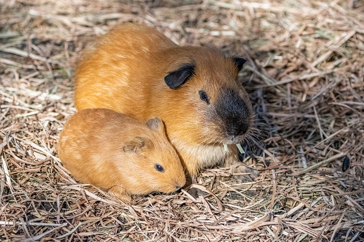
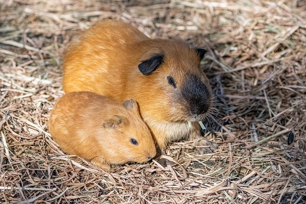

Nomes Populares: Conhecido também como "porquinho-da-índia" ou "cavie"
Classificação Biológica
Domínio: Eukaryota
Reino: Animalia
Filo: Chordata
Classe: Mammalia
Ordem: Rodentia
Família: Caviidae
Gênero: Cavia
Espécie: C. porcellus
Nutrição Geral e Hábitos Alimentares
Tipo de Nutrição: Herbívoro
O porquinho-da-índia se alimenta principalmente de vegetais frescos, frutas, feno e ração específica para roedores. Sua dieta deve ser rica em fibras para manter a saúde digestiva. É importante fornecer uma dieta variada e balanceada, evitando alimentos ricos em açúcares e gorduras.
Morfologia
Pelagem e Corpo O porquinho-da-índia tem um corpo compacto e robusto, coberto por uma pelagem que pode variar em cor e padrão. A pelagem é geralmente curta, mas algumas variedades têm pelos mais longos. O corpo é arredondado, com patas curtas e um pequeno rosto com olhos grandes. Órgãos Respiratórios O sistema respiratório do porquinho-da-índia é semelhante ao de outros mamíferos, com narinas, fossas nasais, cavidade nasal, faringe, laringe, traqueia e pulmões. Patas As patas são curtas e adaptadas para a vida no solo, com quatro dedos em cada pata dianteira e três nas traseiras.
Comportamento
O porquinho-da-índia é um animal social e ativo, que vive em grupos na natureza. Em cativeiro, é importante que tenha companhia de outros da mesma espécie para evitar solidão. É um animal curioso e pode ser treinado para realizar truques simples e interagir com seus donos. Além disso, emite uma variedade de sons para se comunicar.
Ocorrência
Originário da América do Sul, o porquinho-da-índia é nativo das regiões de florestas e áreas de vegetação densa na Bolívia, Peru e partes do Brasil. Atualmente, é amplamente distribuído em todo o mundo como animal de estimação.
Mapa de Ocorrência
Reprodução
Sistema de Acasalamento: O porquinho-da-índia é geralmente monogâmico, embora em cativeiro possa ser mantido em grupos. Reprodução ao Longo do Ano: A reprodução pode ocorrer durante todo o ano. Gestação: A gestação dura cerca de 59 a 72 dias. Ninhadas: As fêmeas podem ter de 1 a 6 filhotes por ninhada, com média de 2 a 4 filhotes. Os filhotes nascem totalmente formados e cobertos de pelos.
 
